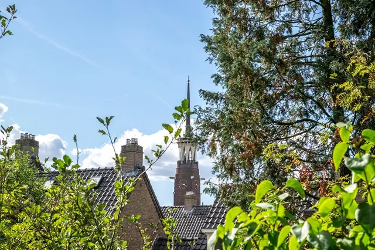
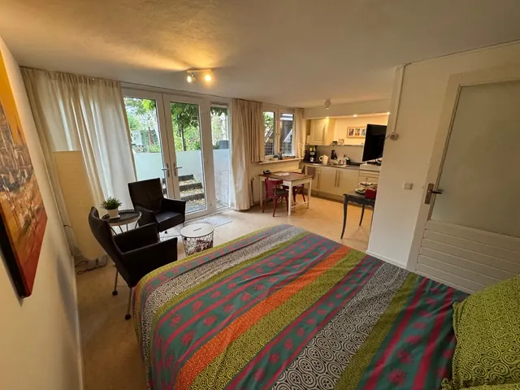

De leukste B&B’s in Nijmegen oost
Gepubliceerd op 20 december 2022, bijgewerkt op 14 oktober 2024
Onderdeel van de gids Overnachten in Nijmegen en B&B in Nijmegen

Nijmegen Oost is een bruisende woonwijk gelegen tussen de Berg en Dalseweg en de Groesbeekseweg. De Wijk bestaat uit de volgende buurten: Bottendaal, Altrade, Groenewoud, Galgenveld, Hunnerberg, Hengstdal, Ooyse Schependom en Kwakkenberg. In Nijmegen-Oost is genoeg te doen,, waaronder het bezoeken van verschillende kazernes prachtige kerken,, zwemmen in het zwembad,, of een hapje eten bij een van de vele eetgelegenheden…. En vergeet het Spook van de Van ’t Santstraat niet! Voor een comfortabele overnachting in Nijmegen-Oost zijn hier enkele van de beste B&B’s:

Bed and breakfast Stadsoase
Stadsoase is een bed and breakfast dat geschikt is voor groepen van vier tot acht personen. Het is gevestigd in een oude hofstede uit 1895 en is volledig gerenoveerd. De voormalige stadsboerderij biedt plaats aan vier personen boven en nog eens twee tot vier op de eerste verdieping, met voorzieningen als televisie, draadloos internet, een grote tafel voor acht personen, en een aparte ontbijtruimte. De kitchenette heeft een koffiezetapparaat en een koelkast voor je gemak.
Aangezien het gastenappartement een eigen ingang heeft, kun je verzekerd zijn van privacy tijdens je verblijf. Bovendien heb je gedurende je hele verblijf het alleengebruik van de badkamer en de keuken.
Je bent meer dan welkom om gebruik te maken van het grote terras terwijl je hier bent. Voor groepen is er een extra studio-optie en een unieke buitenbadkamer.
Bed and breakfast “Het oude Pomphuisje”
De B&B ligt op 4 km afstand van Nijmegen, genesteld in Berg en Dal. Het is gevestigd in een voormalig pompgebouw van het waterleidingbedrijf uit 1929 en ligt in een bosrijke omgeving boven op heuvels – perfect voor wie rust en stilte verlangt. Je krijgt een heel huisje voor jezelf met alle voorzieningen die je nodig hebt voor een comfortabel verblijf, zoals wifi, vloerverwarming, radio en televisie. Bovendien is er een volledig uitgeruste keuken met alles wat je nodig hebt om ontbijt of lunch/diner te bereiden. Tot slot staat er een tweepersoonsbed voor je klaar als het tijd is om te stoppen met slapen.
Bed and breakfast Hunnerzijds
Als je op zoek bent naar een serene oase waar je kunt ontsnappen aan de drukte van alledag, zoek dan niet verder dan deze charmante bed and breakfast gelegen in Nijmegen-Oost. Op slechts 15 minuten lopen van het stadscentrum, 10 minuten lopen van de bossen (N70 route), en 15 minuten lopen van de Radboud Universiteit, biedt deze B&B volledige privacy met een eigen ingang, grote woon- en slaapkamer (25 m2) met kitchenette en aparte ruime badkamer. De keuken is compleet met koelkast, vriezer en magnetron. Als je van entertainment houdt, hebben we een TV, DVD-speler en geluidsinstallatie voor je. Je hebt ook gratis toegang tot internet. Tenslotte kijkt het bed and breakfast uit op een grote tuin op het zuiden met verschillende zitjes waar je tijdens je verblijf gebruik van kunt maken. Er zijn allerlei winkels, restaurants en cafés op loopafstand van de buurt. Het is ook een prima locatie voor boswandelingen of fietstochten in de Ooijpolder.

Voor ieder wat wils
Of je nu op zoek bent naar een schilderachtig, gezellig uitje of een gemakkelijk bereikbare city escape, in Nijmegen-Oost is er voor elk soort reiziger wat wils. Met unieke en mooie B&B’s als Stadsoase, Het Oude Pomphuis en Hunnerzijds kun je niet verkeerd gaan bij het kiezen van je accommodatie. Geniet van de rust en sereniteit van het landelijke leven in combinatie met gemakkelijke toegang tot het bruisende stadscentrum van Nijmegen! Als je meer wilt ontdekken dan alleen Nijmegen zelf, zijn de omliggende plaatsen Groenewoud, Galgenveld, Hunnerberg, Hengstdal, Ooyse Schependom en Kwakkenberg allemaal een bezoek waard. Maak zeker ten volle profiteren van alles wat er in Nijmegen-Oost te zien, te verkennen en te beleven valt. Je zult er geen spijt van krijgen!
Wacht niet langer en boek
Wacht dus niet langer; boek je verblijf vandaag nog en maak je klaar voor de geweldige tijd die je te wachten staat in deze historische Nederlandse stadsregio! Heerlijk overnachten in Nijmegen met een verscheidenheid aan accommodatiemogelijkheden kun je er zeker van zijn dat je iets vindt dat perfect bij je wensen past. Fijne reizen!
NOg meer B&B inspiratie